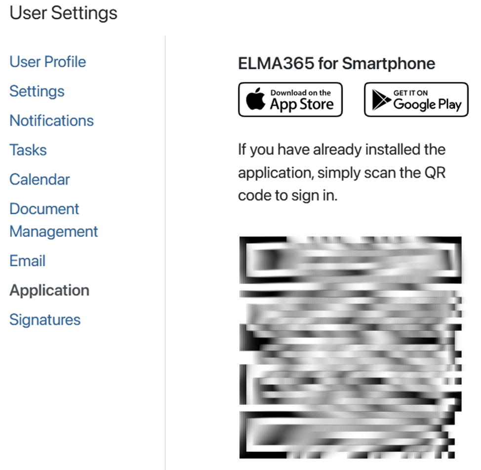
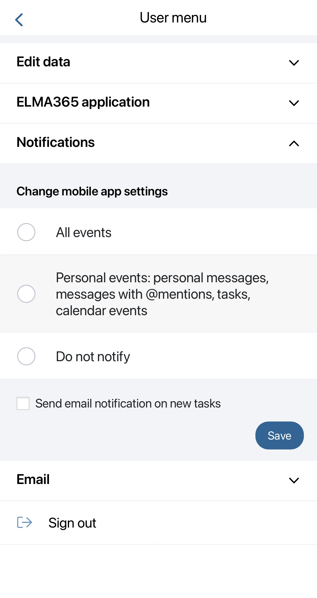

The BRIX mobile application allows you to stay connected with your team wherever they are, receive tasks, notifications, and handle documents without any delays.
The application is installed on the phone or tablet, and provides all the necessary tools for remote work such as messaging, calendar, tasks, the start of business processes, as well as files and documents management. You can also set custom notification logic.
Using the app version 1.3.0 and above, users can work not only in the BRIX system but also on the external portal. For more information, see External portal in an app.
Install the mobile application
Download the app from AppStore or Google Play. Log into your BRIX account. There are two ways to do it:
1. With a QR code.
Open BRIX in the browser or on your desktop, open the user profile settings in the top right corner of the page and select the BRIX Applications tab. Here you’ll see the QR code for simple sign-in. Open the application on your phone, and tap the Scan QR code button on the login page. You will be logged into your account automatically.

2. With a login and password.
Open the application on your phone and tap the Enter via login and password link. Enter your company’s URL. Note that If the company is using BRIX On‑Premises, you will need to specify the URL including https.
After that, depending on the company’s settings, you can sign in using the following methods:
- Enter your BRIX login and password.
- Use a phone number used in your profile instead of a login if authentication via a phone number is set up for the company. If sending a one-time code is enabled in the settings, tap Get code. Then enter the code and log in. To log in to BRIX using a login and password, tap Use another sign-in method.
If you cannot log in to BRIX On-Premises, the administrator needs to make sure that the installation is signed with a valid and active full chain certificate.
The mobile application is free, doesn't require a separate license, and is available for all BRIX users.
How to work in the mobile application
Once you have signed in, the main page opens as configured in the company settings. For example, it may be the activity stream where you can view and respond to messages, leave comments, write into live chats.
To use the other features, use the controls at the bottom of the screen.
You can:
- Access the Tasks and Calendar workspaces.
- Start a business process. To do this, click the + icon in the center of the panel and select a process from the list.
- Navigate the main menu to access the rest of the workspaces (files, live chats, etc). To do that, tap the More button in the bottom right corner of the screen.
начало внимание
The mobile application does not provide administration features.
конец внимание
Settings
In the mobile app, you can edit your profile, change the avatar, interface language, and change notification settings, and connect the email.
To do that, tap the More button in the lower right corner of the screen, and then the gear icon at the top of the screen.
Four tabs are available here:
- On the Edit data tab, you can edit your name, date of birth, phone number, and avatar.
- On the Application tab, you can change the interface language, the first working day of the week in the calendar, and your time zone.
- On the Notifications tab, you can adjust system notification settings.

These settings are applied to the mobile application only and are not applied to the web version or desktop application.
- On the Email tab, you can connect your email to the built-in BRIX inbox. To learn more, see Connect an email to an account.
To log out of the app, tap the Sign out button at the bottom of the page.
Found a typo? Select it and press Ctrl+Enter to send us feedback